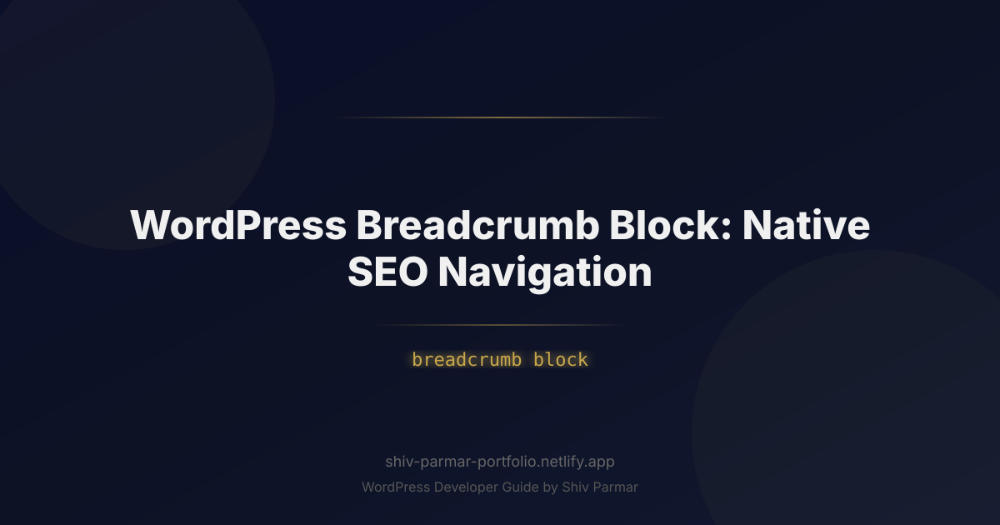

WordPress Breadcrumb Block: Native SEO Navigation | Shiv Parmar
Table of Contents
Navigating a modern website should feel effortless. When users land deep within your site content—whether through a direct search query, a shared link, or a targeted advertisement—they immediately need to understand where they are and how to explore related topics. Without clear visual and structural cues, users quickly bounce back to the search engine results page (SERP), leaving valuable conversion opportunities behind.
This is where breadcrumb navigation becomes essential. Acting as visual breadcrumbs left along a forest path, a breadcrumb trail provides secondary navigation that clearly displays a user's current location within a website's overall taxonomy. More importantly, search engines rely heavily on breadcrumbs to parse site architecture, map parent-child relationships between pages, and build rich snippets directly in search results.
With the rise of Full Site Editing (FSE) and block-based site building in WordPress, implementing native breadcrumb navigation has transformed. Moving away from heavy third-party plugins that bloat your render tree, the native modern breadcrumb block provides lightweight, high-performance, and SEO-friendly structural navigation. In this comprehensive guide, we will explore everything you need to know about implementing, customizing, and optimizing the WordPress breadcrumb block for modern search engines and users alike.
What is the WordPress Breadcrumb Block?
The WordPress breadcrumb block is a specialized site-building component used in the Gutenberg editor and Full Site Editing (FSE) ecosystem. It generates a hierarchical trail of links reflecting the structural pathway from your homepage down to the current single post, page, or custom post type taxonomy. Typically rendered in a clean horizontal sequence (such as Home > Blog > SEO > Article Title), this element acts as a critical anchor for both human navigation and search engine crawling.
Historically, WordPress users had to rely on complex PHP functions inserted directly into theme templates (such as yoast_breadcrumb()) or third-party shortcode plugins to display breadcrumbs. These solutions often introduced unnecessary script dependencies, loaded extra database queries, and were difficult to style without diving into custom CSS files or child themes.
By contrast, block-native breadcrumb solutions leverage the WordPress block engine's native architecture. They can be inserted seamlessly into single post templates, archive layouts, and header template parts directly through the Site Editor (Appearance > Editor). Additionally, modern breadcrumb blocks dynamically generate semantic HTML tags combined with standardized Schema.org structured data, ensuring search engine bots read your site hierarchy accurately without needing supplemental optimization plugins.
Why Breadcrumb Navigation Matters in 2026
As search algorithms evolve toward deep semantic understanding, site structure has become one of the primary ranking factors for technical SEO. In an era dominated by Generative Engine Optimization (GEO) and AI-driven search experiences, search engines do not just index individual pages—they index contextual relationships across your entire domain. Breadcrumbs act as explicit instructions for how your content nodes interconnect.
Beyond traditional indexation, native breadcrumbs directly impact performance metrics, user experience indicators, and visual placement within search engine result pages. Modern web browsers and search bots penalize slow, unoptimized sites, making native, zero-dependency block elements far superior to legacy plugin alternatives.
| Optimization Vector | Impact on Site Performance | Primary SEO / UX Benefit |
|---|---|---|
| Crawl Depth & Efficiency | Lowers server resource consumption by providing clear structural paths. | Helps search spiders discover deep-nested content faster within crawl budget limits. |
| Structured Data / Schema | Zero client-side processing overhead when rendered via native JSON-LD. | Triggers Rich Results in Google SERPs, replacing raw URLs with clean navigation trails. |
| Core Web Vitals (CLS/LCP) | Prevents layout shifts (CLS) by loading natively alongside DOM layout construction. | Improves overall PageSpeed scores compared to heavy client-side JS plugin scripts. |
| User Engagement & UX | Reduces cognitive load by showing immediate context upon arrival. | Decreases bounce rates and increases average session duration through easy backtracking. |
Crawl Budget and Architectural Clarity
Search engine crawlers allocate a specific "crawl budget" to your domain based on your server responsiveness and site authority. When crawlers hit a page without clear internal link paths, they may struggle to discover related context or parent categories. Breadcrumb trails establish immediate bidirectional internal links: every post automatically links back to its primary category, parent pages, and home domain. This logical link flow passes page rank (LinkEquity) back up to high-level category hubs while reinforcing topic authority across your target verticals.
Schema.org Integration and Rich Snippets
Search engines like Google, Bing, and DuckDuckGo utilize the BreadcrumbList schema specification from Schema.org. When properly structured in JSON-LD format alongside HTML markup, search engines extract this metadata to replace standard, raw web URLs in search result listings with stylized, readable navigational paths. Search results featuring rich breadcrumb trails enjoy significantly higher Click-Through Rates (CTR) because users can visually confirm the exact sub-category and context of the result before clicking.
Step-by-Step Guide: Implementing and Optimizing Breadcrumb Blocks
Implementing native, search-engine-optimized breadcrumb navigation in modern WordPress involves selecting the right architecture, configuring block layout settings within the Site Editor, and ensuring full Schema markup support. Below is a complete step-by-step walkthrough for setting up breadcrumb navigation within your WordPress theme.
Step 1: Choose Your Breadcrumb Block Strategy
Because the core WordPress core software continues to expand its block library, site owners have three primary choices for integrating a breadcrumb block:
- Core/Theme Native Blocks: Modern block-based themes (such as Twenty Twenty-Four or block-first agency starter themes) often include built-in, low-footprint breadcrumb blocks.
- SEO Plugin Block Extensions: Industry-standard SEO suites (such as Yoast SEO, Rank Math, or SEOPress) provide dedicated Gutenberg blocks designed to replace legacy shortcodes while outputting automatic Schema markup.
- Custom Server-Side Rendered Block: For enterprise setups, building a custom lightweight block using native PHP hooks guarantees absolute control over HTML semantics, zero plugin dependency, and custom caching.
Step 2: Add the Breadcrumb Block in the Site Editor
To ensure breadcrumb navigation appears consistently across all posts and pages, insert the block into your site’s main single-template files via Full Site Editing (FSE). Avoid adding breadcrumbs manually to individual posts; managing them at the template level ensures site-wide maintenance efficiency.
- Navigate to your WordPress Dashboard and select Appearance > Editor.
- Select Templates from the left sidebar and select Single Posts (or Single Pages).
- Locate the primary content area inside the editor canvas. Place your block cursor directly above the
Post Titleblock. - Click the block inserter (
+) icon and search for "Breadcrumb". Select your chosen breadcrumb block. - Use the block setting inspector panel on the right sidebar to configure dynamic parameters:
- Toggle "Show Home Link" to active.
- Set the custom Home text (e.g., "Home" or an icon representation).
- Define the path separator symbol (common choices include
/,>, or»). - Select the target primary taxonomy (e.g., Categories vs. Tags).
- Click Save in the upper right corner to publish template changes across all single posts.
Step 3: Styling Breadcrumbs via theme.json and CSS
Breadcrumbs should complement your main typography hierarchy without competing visually with your primary H1 heading. Using WordPress block global styles (or custom theme specifications via theme.json), you can adjust font size, margins, and anchor color states.
Below is an example of declaring default utility block properties inside your theme's theme.json file to maintain design consistency:
{
"version": 3,
"styles": {
"blocks": {
"core/navigation": {
"typography": {
"fontSize": "var(--wp--preset--font-size--small)",
"lineHeight": "1.4"
}
}
},
"elements": {
"link": {
":hover": {
"typography": {
"textDecoration": "underline"
}
}
}
}
}
}If you prefer dedicated CSS rules for target styling across device viewports, append modern CSS directly inside your theme style sheet or Site Editor Additional CSS block:
/* Styles for Native Breadcrumb Trail Container */
.site-breadcrumb-container {
display: flex;
flex-wrap: wrap;
align-items: center;
gap: 0.5rem;
font-size: 0.875rem;
color: #555555;
margin-bottom: 1.5rem;
}
.site-breadcrumb-container a {
color: #0066cc;
text-decoration: none;
transition: color 0.2s ease-in-out;
}
.site-breadcrumb-container a:hover,
.site-breadcrumb-container a:focus {
color: #004499;
text-decoration: underline;
}
.site-breadcrumb-container .breadcrumb-separator {
user-select: none;
color: #999999;
}
.site-breadcrumb-container .breadcrumb-current {
font-weight: 600;
color: #222222;
}Step 4: Programmatically Injecting Schema.org Breadcrumb JSON-LD
While visual breadcrumbs serve user navigation, search engine crawlers rely on structured data formats like JSON-LD. If your chosen theme block renders HTML elements without microdata or JSON-LD script blocks, add programmatic Schema injection inside your theme's functions.php file.
Here is a light, dynamic PHP snippet designed to generate valid Schema.org BreadcrumbList JSON-LD for single post views without requiring extra bulky plugins:
ID );
$list_items = array();
// Position 1: Home
$list_items[] = array(
'@type' => 'ListItem',
'position' => 1,
'name' => 'Home',
'item' => $home_url,
);
$position = 2;
// Position 2: Primary Category (if available)
if ( ! empty( $categories ) ) {
$primary_category = $categories[0];
$category_link = get_category_link( $primary_category->term_id );
$list_items[] = array(
'@type' => 'ListItem',
'position' => $position,
'name' => esc_html( $primary_category->name ),
'item' => esc_url( $category_link ),
);
$position++;
}
// Position 3: Current Single Post Page
$list_items[] = array(
'@type' => 'ListItem',
'position' => $position,
'name' => esc_html( get_the_title( $post ) ),
'item' => esc_url( get_permalink( $post ) ),
);
// Build final schema structure
$schema_data = array(
'@context' => 'https://schema.org',
'@type' => 'BreadcrumbList',
'itemListElement' => $list_items,
);
echo '' . "\n";
}
add_action( 'wp_head', 'add_native_breadcrumb_schema' );
Step 5: Registering a Custom Gutenberg Breadcrumb Block
For theme developers looking to implement a pure, dependency-free block component in Gutenberg, creating a dynamic dynamic server-side render block using register_block_type is the ideal route. Below is the registration logic required to build a native custom server-rendered breadcrumb block.
First, define your block metadata in a standard block.json file located inside your plugin or child theme directory:
{
"$schema": "https://schemas.wp.org/trunk/block.json",
"apiVersion": 3,
"name": "custom/native-breadcrumb",
"title": "Native SEO Breadcrumb",
"category": "widgets",
"icon": "list-view",
"description": "Displays semantic HTML breadcrumbs with automated SEO paths.",
"keywords": ["breadcrumb", "navigation", "seo"],
"supports": {
"html": false,
"color": {
"text": true,
"background": true
},
"typography": {
"fontSize": true
},
"spacing": {
"margin": true,
"padding": true
}
},
"textdomain": "custom-theme",
"render": "file:./render.php"
}Next, create the corresponding dynamic template file render.php inside the same directory to produce structured HTML markup output automatically whenever the block renders:
'site-breadcrumb-container' ) );
?>
Best Practices for Native Breadcrumb Optimization
Simply enabling breadcrumbs on your WordPress site is not enough. To maximize user interface design, accessibility standards, and SEO power, adhere to these technical best practices when configuring your breadcrumb block architecture.
1. Ensure Complete Accessibility (WCAG 2.2 Standards)
Breadcrumbs are primary navigational landmarks for visitors utilizing screen readers and modern assistive technology. Your site breadcrumbs must abide by standard Web Content Accessibility Guidelines (WCAG):
- Wrap the visual trail inside a semantic
<nav>HTML element containing an explicitaria-label="Breadcrumb"attribute. This distinguishes breadcrumb trails from primary site header menus. - Use ordered lists (
<ol>) and list items (<li>) internally so voice screen readers can accurately declare total items in the trail (e.g., "Navigational list, 3 items"). - Mark visual separators (like slashes or arrows) with
aria-hidden="true"so voice screen readers skip speaking symbols out loud (preventing repetitive announcements like "Home greater than SEO greater than Article"). - Apply
aria-current="page"explicitly to the final element representing the unlinked current page view.
2. Align Structural Navigation with Canonical Link Strategy
Ensure that the secondary categories shown in your breadcrumb navigation map directly to your preferred SEO taxonomy strategy. If a post belongs to multiple categories (e.g., "Technology", "News", and "WordPress"), your system must consistently output a single, deterministic primary category within the breadcrumb tree.
Selecting multiple category trails randomly per page render causes internal link instability, confuses search engine indexing bots, and distributes page equity unevenly across taxonomy archives. Use standard SEO plugin fields (like Yoast or Rank Math Primary Category settings) to set clear primary parent nodes.
3. Optimize Mobile Responsive Design Layouts
Horizontal space is severely limited on smartphone viewports. A common mistake is allowing complex, deep-nested breadcrumb trails to wrap onto three or four lines, pushing main page content below the fold and harming Core Web Vitals targets.
Instead of wrapping complex paths multi-line on small viewports, implement mobile-friendly layout patterns with CSS:
- Horizontal Scrolling Containers: Allow long breadcrumb trails to stay on a single line using
white-space: nowrap; overflow-x: auto;so users can swipe horizontally across long structural trails. - Truncated Intermediate Nodes: Hide middle category steps on screen sizes under 480px width while keeping the root
Homelink and current parent node visible.
/* Mobile Responsive Breadcrumb Scroll Pattern */
@media (max-width: 600px) {
.site-breadcrumb-container ol {
display: flex !important;
flex-wrap: nowrap !important;
overflow-x: auto !important;
-webkit-overflow-scrolling: touch;
scrollbar-width: none; /* Hide scrollbars for clean UI */
}
.site-breadcrumb-container ol::-webkit-scrollbar {
display: none;
}
.site-breadcrumb-container .breadcrumb-item {
white-space: nowrap;
}
}4. Keep Navigation Paths Shallow and Logical
Breadcrumbs reflect overall site architecture. If your site breadcrumbs frequently output six or seven nested steps (e.g., Home > Shop > Women > Apparel > Tops > T-Shirts > Vintage > Product Name), your site architecture is too deep. Deep structural nesting creates poor user experiences and dilutes link authority before search bots reach target content nodes. Strive to maintain a maximum architectural depth of 3 to 4 link levels across all post types.
Common Mistakes to Avoid with WordPress Breadcrumb Navigation
Even experienced technical site developers occasionally make implementation errors that degrade website performance or compromise technical SEO gains. Review your setup to prevent these common mistakes.
1. Duplicating the Active H1 Heading as an Active Link
The final item in your breadcrumb sequence represents the current page the user is viewing. A frequent error is making this final leaf node a clickable hyperlink targeting the exact page URL the user is already visiting.
Self-referential links waste link crawling resources, create potential duplicate link loop traps for basic spiders, and confuse visual site users. The final breadcrumb element should be plain static text styled clearly to indicate the current active view, combined with the attribute aria-current="page".
2. Discrepancies Between Visual DOM and JSON-LD Schema
Search engines cross-reference visual page content against your structured data payload. If your client-side visual breadcrumb block renders Home > Design > Graphic Tools while your backend JSON-LD script outputs Home > Software > Tools, search engines will detect contradictory signals. This mismatch can trigger structured data warnings within Google Search Console and cause loss of rich snippet eligibility across your domain.
3. Hiding Mobile Breadcrumbs via display: none;
Hiding visual breadcrumbs completely on mobile screens using simple CSS rules (such as @media (max-width: 768px) { .breadcrumbs { display: none; } }) while serving the markup in the HTML source can be problematic. Modern search engine indexers prioritize mobile-first rendering; if structural breadcrumbs are hidden on mobile devices, Google may stop rendering rich breadcrumb snippets in mobile search results altogether. Instead of hiding the breadcrumb navigation completely, use horizontal swipe containers or hide only intermediate non-essential steps.
4. Omitting Breadcrumbs on Custom Post Types
Site builders frequently focus breadcrumb block integration exclusively on standard WordPress single blog posts, completely ignoring Custom Post Types (CPTs) like portfolio projects, real estate listings, knowledge base documents, or e-commerce products. Custom post types often carry complex taxonomy structures that benefit significantly from structural breadcrumbs. Ensure your templates for custom post types and custom taxonomy archives include native breadcrumb blocks as a core component of their default structural layout.
Conclusion
Integrating a native breadcrumb block into your site layout is a simple yet powerful way to elevate both user experience and search engine visibility. By offering a clear visual trail, this essential element streamlines site navigation for visitors while giving search engine crawlers the structured context they need to index your content effectively. Leveraging native WordPress features ensures your site remains fast, accessible, and aligned with modern SEO best practices without relying on bloated plugins.
If you are ready to optimize your website structure, refine your site architecture, or build a bespoke digital experience tailored to your brand, expert help is available. Shiv Parmar is available for WordPress development work worldwide to assist you in creating fast, scalable, and search-friendly websites. Reach out today to discuss your project and take your WordPress site to the next level.